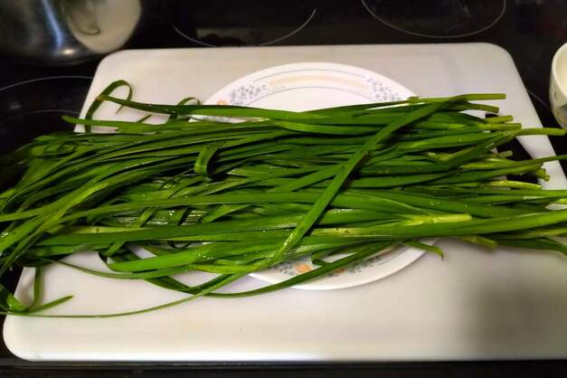

Recipes
Recipes have been categorized, not necessarily by skill demand, but more by level and
amount of preparation, and technique involved. More recipes will be added at a later date. Enjoy!
Back to Top
Simple Recipes
- Hot and Sour Soup
- Red Bean Soup
- Scallion Pancakes
- 
- Stuffing Recipes
Bonus Recipe!
I was suddenly asked to help cook some beef flank and was able to document the process, so listed below is a recipe for preparing Beef Flank with a pressure cooker. Beef Flank is an essential ingredient for Beef Noodle Soup, a popular Taiwanese noodle soup dish. The recipe prepares the beef flank, along with the broth for this dish.